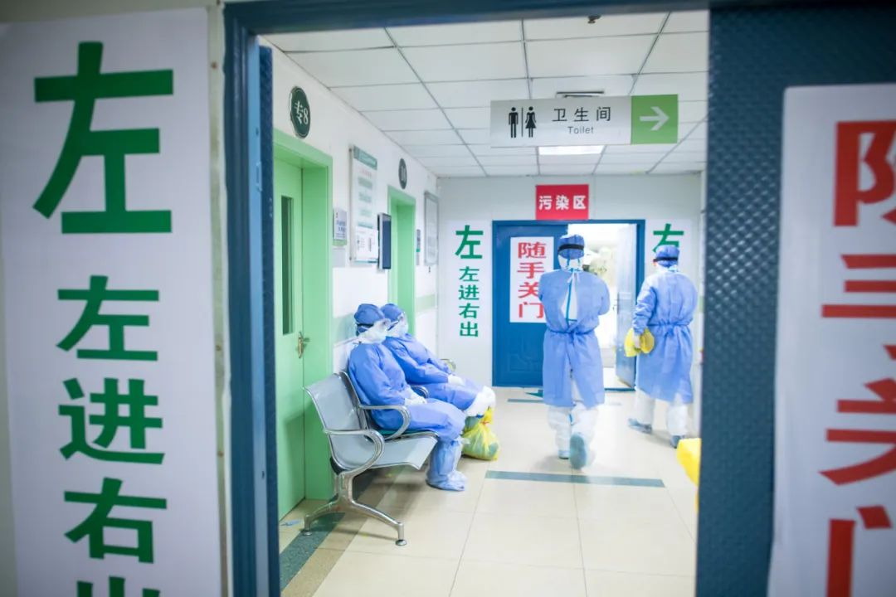
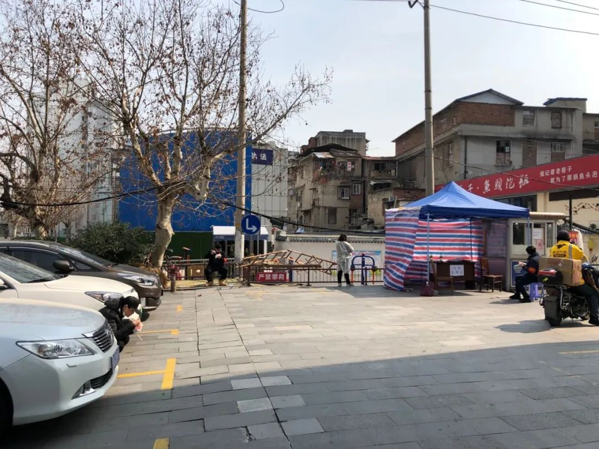
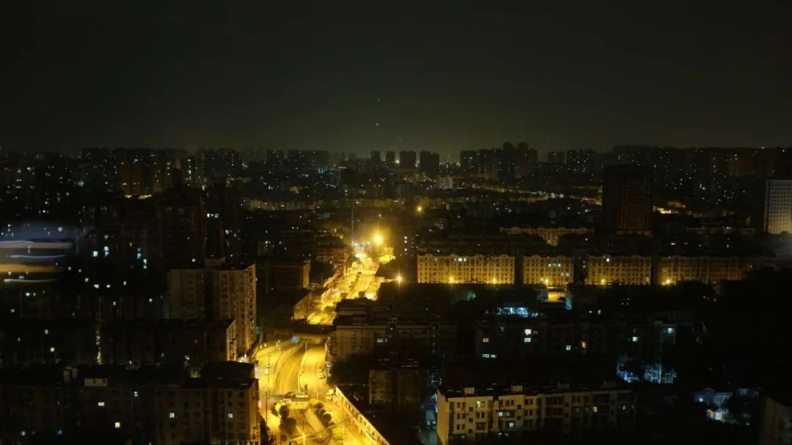
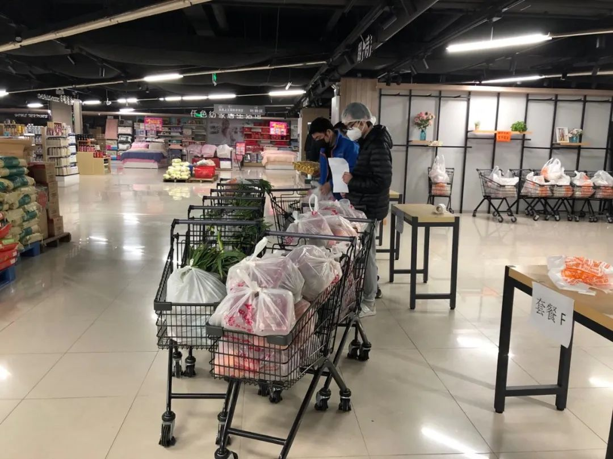
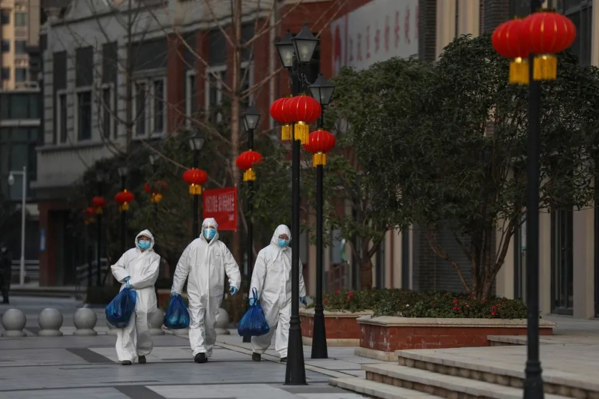

封城第六十天：武汉苏醒
原文链接 备份链接 无数文字记录下国人在近两百年的苦难，个人命运永远拗不过外部力量，传统文化塑造了坚韧又沉默的人格。自然灾害也好，时代洪流也好，人总是要活下去，把生活过下去 本文首发于南方人物周刊 文、图 | 本刊记者 杨楠 发自武汉 …


我坐G70次高铁去武汉时，车票上的终点是郑州。在列车时刻表上，武汉“消失”了。虽然买不到直接去的票，但朋友告诉我，以前途径武汉的高铁，仍然会在武汉开门，尽管它在车票上显示为“无”。
那天是2月12日，疫情严峻时期。那时的武汉，像是一座孤岛。
大约下午5点左右，列车开到了武汉。包括我在内，有五名乘客要下车，我们提前走到车门边，看见车厢上所有人盯着我们。有个大哥没忍住，他试图压低嗓子，但所有人都听见了他说的：“我X，现在还有人进武汉？”
在当时，“封城”这一空前举措，不只是隔断了现实交流，它也造成了人心中的一层迷障。
“武汉”这两个字，暂时失去了现实含义，它成为一个概念，与病毒、疫情、死亡等相联系，令人不愿接近。当然，那不是真的。
真实的武汉，依然和往常一样，生活着上千万人。我很好奇他们的生活。

打错了
来武汉的第一天，我的感受是“污浊”，像是整个城市都被感染。
我知道，科学不支持我的感受。新冠病毒普遍的传播形式，是飞沫传播和接触传播。而飞沫传播的距离只有1到2米，病毒在外界的存活时间也不长。
但是，它们不能帮我脱离恐惧。
人脑中有非理性的一面，它诱导我相信，身处武汉中，每个角落都沾满病毒，空气中也飘着病毒。我站在武汉站外的广场，四周没有一个人，但我仍然感到被危险包围，一刻不敢将口罩除下。

陈卓/摄
这种“疑心病”，伴随了我在武汉的前三天。
在酒店，见惯了的污乱地毯，我以为是病毒的“窝”。房间里的空调不好，时冷时热，我却怀疑是自己的体温变化。消毒水的气味让我安心，虽然它有一定的腐蚀性。我每隔几分钟洗一次手，手掌快要磨破皮。
还好，我后来知道，不只是我这么想过。
一位滴滴保障车的司机说，在早期时，即便是医生护士，也都“疑神疑鬼”的。他们上车也要全副武装，在后座的各处撒上酒精或消毒水，再用棉片擦拭干净。有个年轻女护士疑心自己被感染了，她想念起亲人，说着说着嚎啕大哭。
病毒像块巨石，“压”在每个人心上。
人们变得戒备十足，不止一次，我在找路时，向行人询问，他们下意识后退两步，甚至绕开我走。有一次我换酒店住，在一个客满的酒店，工作人员见我拖着行李，还没等我走几步路，她就大声驱赶，叫“出去、出去”。
当时，疫情爆发20多天了，武汉对道路、社区的封锁，还在层层加码。
大多店铺一关了之，杜绝往来。仅有的几家超市，用桌子或纸箱堵着门，门上挂着锁。来一个客人，开一次锁。
“距离”从未如此重要，大街小巷，路障重重。共享单车成为一种“道具”，堆在路障的两边。它们还被挂在小区的墙上、栏杆上，为的是防止有人钻空子。

疫情时期的武汉一角 向由/摄
距离被拉开后，人们需要一种新的“连结”。
在疫情早期，旧的生活被打乱，新的联系还没建立时，局面显然是失控的。
李萌是个心理咨询师，参与过汶川地震时的心理救援，她在1月26日加入某个热线平台，想的是处理心理危机，但面对的都是现实问题。
大概在前两周，她听到的，全是城市里的各种困难。“担心自己生病了，但没有医生。发现自己或家人发烧的，但找不到车。好不容易去了的，但医院不收。在医院排队的，等很久等不到床位……”
他们对着心理咨询师，讲的是困难而非苦恼。但他们恳求：“帮帮我”。
其实，他们不是不懂，而是无奈。
有个老人对李萌直言：“我知道我不该打你电话，但现在家人病了，（没有床位）医院不收，我该怎么办？我在电视上看到你们的热线，我是看见个电话就打，不管是哪儿的电话。”
他们一面“乱投医”，一面四处碰壁。城市的基本功能受损，生活经验随之失效，他们的每一步行动都极为艰难。

重联
李萌没有办法，她和同事们一起，改变了工作模式。
他们收集武汉各社区的电话，列出长长的表单，包括了社区书记到社区卫生人员，以及其它职能部门联系人。每当接到“打错”的电话，她就提醒对方，还有哪些电话可以打。李萌说，她的工作变成了“心理咨询+社工”。
临时脱离了“本职工作”的人，不只她一个。
王粒丁知道孤寡老人吃饭困难，他对接了商超资源，组织车队在城中奔波，将蔬菜肉食免费送到老人手里。但他本来是一个纪录片导演。
婷玉关注非新冠患者，在医疗资源集中挤兑时期，他们即便病情危急，也很难得到及时治疗。婷玉帮他们找指挥部、联系医院和床位。她的朋友评价说：“婷玉老师以前是‘两耳不闻窗外事’的，真没想到，她会来做这件事，还做了这么久”。
来武汉前，我报道过“一对送口罩的夫妻”：汪沺和莫莎莎。他们利用积累的人脉，提前订购并持续认购口罩，把它们送到医生、疑似患者、社区工作人员手里。而汪沺是金融从业者，莫莎莎则是一位媒体人。
像他们这样，临时做“社工”的人，其实还有很多。

一位志愿者正把分装好的生活物资送给小区居民
他们用私家车组队，运送医务人员上下班，临时做起“出租车司机”。或者，他们联系省外、境外物资，弥补资源不足。又或者，他们准备一箱盒饭，找遍公园与地道，给生活困难的人一顿晚餐……
他们不属于公益机构，也没和公益组织合作过，所以在严格意义上，他们不算“志愿者”，只能称之为“热心人”。但是，他们在武汉“断联”时期，是重建联系的一股力量。
客观来说，他们付出很多，“出击”很快，灵活性强，但他们提供的帮助有限。他们是“雪中一块碳”，在疫情面前，虽然温暖，但是不够。
相比之下，武汉政府的反应迟缓一些，在早期受到了舆论诟病。但它要做的，不是“散兵游勇”式的救济，而是重新布局“战时状态”，照顾到城里的上千万人，以及他们方方面面的需求，这需要时间。
政府是要兜底一切的责任人，而新冠肺炎导致的疫情，是近世所罕见的考验。
1月底，武汉对病人统一实行“分级诊疗”，疏解了各大医院的看诊压力。给病人看病的一线，从医院门诊转移到社区医院。按照需求，他们会被层层上报、安置。医疗系统开始了秩序重建。

“分级诊疗”不是一个新词，它早出现在各类“医改”文件中，是医疗体系未来发展的方向。然而现实是，“医改”尚未完成，“分级诊疗”还不成熟。武汉的社区医生“临危受命”，一时间，他们的压力之大，不亚于临床一线。
社区医院排查病人，定点医院收治病人，从中对接的是“社区一线”。
他们同样是临危受命，在平常生活中，他们的存在感不高，但在疫情时期，他们不得不挑起大梁，去面对基层最为复杂的时期。

当时只道是平常
“社区一线”最大的问题，显然是人员不足。在武汉动辄数千人的小区，对应的社区干部往往不过10人左右。
用个比喻说，要将武汉重新“连接”，就像重建一个网络。然而，等待处理的“数据”很多，每个“接口”的运输能力却很弱，注定了它无法正常运转。
所以，组织人员“下沉社区”，是势在必行的。
汪沺的公司叫武汉国创资本投资有限公司，是国资公司下属单位，他很快被安排到社区下沉。据他介绍，“下沉社区”的人选范围，从一开始的党员干部，很快扩散到公务员队伍，又很快遍及国企单位。没过两天，“叫我们国企员工全部下沉”。

三位“下沉干部”正守在某社区门口吃午餐 向由/摄
刘晶伟下沉到硚口区的万信大厦，此处有约160户居民。他负责监视小区人员的进出。
有的居民不配合工作，2月20日下午，楼里出来一位大姐，她嘴里骂骂咧咧，拒绝体温检测，强硬地离开了小区。刘晶伟只是对我苦涩笑笑，说：“有时也会遇到这种情况”。
来的“下沉干部”有4个人，他们计划两人一班，一天一轮岗。没想到过了一天，有位同事发烧被隔离，他们只好3人一班，持续每天守在门口。“看大门”说来简单，难的是保持体力和耐心，他们对每个进出人员详细解释，并做好登记工作。
“下沉干部”到位后，落实了政府的严管政策。所有居民据守在家，令城市的街道空无一人。每到夜晚，万家灯火亮起，那是武汉最接近往常的一刻。我看着星空般的城市，它与街道的沉默形成强烈反差。

夜时的武汉最似往常 向由/摄
那一刻，我切身体会到，什么叫“忍耐”，什么叫“代价”，什么叫“英雄的城市”。
汪沺下沉去了“保障组”，他负责的是最直接的民生问题：菜篮子。武汉实行严管政策以来，商场超市不再对个人开放，他们只接社区来的订单。也就是说，困住家中的居民想要买菜，原则上必须报给社区，再作统一安排。
2月22日，一段“武汉嫂子最牛汉骂”的视频在网上热传。主人公是滨江苑小区的业主“雨儿”，她在群中斥责，中百超市对他们推出AB套餐，属于捆绑销售，同时价格高昂，他们投诉无门。
2月23日，我去了滨江苑走访，“雨儿”没有露面。多名认识她的人士回复说，“雨儿”走红后的压力很大，一度关闭手机。她虽然在网上受到热捧，但在现实中，人们的评价不一。
在滨江苑小区门口，几名小区志愿者在接收物资，他们普遍评价，“武汉嫂子”的重点跑偏，该斥责的不是中百超市，而是小区物业，因为套餐是由物业协商后定的。但是，自疫情爆发以来，物业领导就不见了，工作做得很差。

滨江苑小区门口的志愿者对接商品 向由/摄
滨江苑是武汉社区的一个缩影——
“战时状态”下，社区成为一个基本单位，内部又有社区干部、物业、业委会和业主群体。四种角色要同舟共济，但现实往往“各有所图”。

重启
以保障组成员的身份，汪沺的观点是：“没有了‘套餐’，我真不知道怎么办”。2月25日是他送菜的第三天，他和另外两名“下沉干部”去了古田一家综合超市，超市仍然制作“套餐”，但受到“汉骂事件”的影响，是最后一次了。
对超市来说，制作“套餐”费时费力，像往常一样散卖反而轻松。
多名店员告诉我，因为要将蔬菜整理打包，超市关停了小的分店，把他们抽调过来，否则人手根本不能应对。他们的上班时间是早上9点，但因为“加活”，要提前两小时到。店里领导更忙，他们要接受订单，按照需求整理仓库，工作到凌晨是常有的事。
一名店员对我诉说委屈：“我们配合工作，做了比平时更多的活，但别人以为是理所当然的。互相理解就不说了，反过来还怨天怨地。”

武汉超市按“套餐”供应食物 向由/摄
其实，类似的情绪很普遍。菜送到社区，汪沺要按名单通知、分发，绝大多数居民主动下楼，三三两两领走了菜，再道一声谢谢。但是，依然会有一两户人家，用命令的口吻，要求把菜送到门口。或者是挑肥拣瘦，又嫌弃菜色不齐、菜品不佳。
志愿者小叶发给我数段视频，抱怨她的工作辛苦。视频里，一位居民不听劝，破坏了路障，从小区里钻出来。其他居民有样学样，陆续钻出来好几个，完全把志愿者的存在当空气。
小叶告诉我“有个更好笑的事”，一个女孩买了咖啡粉，他们联系店铺，花了两个半小时给她送到。女孩看一眼，说要换个口味，坚持退货换货。小叶很失望，说：“我们服务的，就是这样的人。”
她开玩笑说，她也上网吐槽的话，活脱脱又一个“武汉嫂子”。网民又将评论武汉的保障不足，但外界不知道的是，疫情时期下的真实武汉，究竟有着多少无奈。
想到狠时，毛楠楠想拉一个“网络喷子”，就放在身边看她干活。她是一名年轻的社区干部，“活做得最多，骂挨得不少”。她说，要有个人看见他们，就知道基层有多忙碌了。
疫情爆发以来，毛楠楠每天工作16小时，然而工作有如泰山般压着。她没有精力在网上对质，“不能锅都背了，回头又把工作丢了”。
当然，她也遇到过暖心的事。
2月18日凌晨2点多，她才忙完回家。一个女孩在大半夜走，心理难免怕怕的。突然，一束强光从后面打来，她没忍住回头看，原来是一辆警车。警车远远地跟着她，送她到了楼下。双方都没说啥，走了，“都懂得吧”。

陈卓/摄
武汉经历的疫情时期，不能简单看成是现代城市的“失灵”，它的生活细节有着更多意味。截至3月21日，我在武汉40天了。在我看来，它是一个多种形态的“混合体”，它常让我想起古希腊时期的城邦社会，或者是西周以前的公社制社会。在一段时期，它把现代人强调的个人生活，与群体的集体生活，以最大的程度重叠起来。
所以，它出现了奇特的一面：
以前，人们见面聚会，但更关注的是自己的手机，网络上的遥远世界。
现在，人们被“关”在家，无法聚会，但他们前所未有地关注身边的人和事，关注公共生活。它提醒我们：“身边的悲欢，都和我们有关”。或许，很多人因为这次疫情，才认识了邻居、物业、附近的商超老板。
据湖北省疫情防控指挥部3月24日的消息，从4月8日零时起，武汉将解除离汉离鄂通道管控措施。武汉正在逐步恢复。
日常生活归来后，这次疫情会留下什么吗？
莫莎莎希望改变一件“小事”。她很为自家的物业抱不平，去年12月，居民们决定换个公司，因为现在的收费太高，双方的合同本已终结。
但在疫情面前，“前”物业依然尽心尽力，对接需求和物资，做得比某些高档小区的物业还好，这就让烦心事少了一大堆。她隐约觉得，物业在疫情过后会有转机，但她不敢十分确定。
（毛楠楠、小叶是化名）
作者 | 向由
编辑 | 李少威
图片 | 向治霖 陈卓
排版 | 凑凑
南风窗新媒体出品


点击购买最新一期《南风窗》
点在看，让理性的声音传得更遥远

原文链接 备份链接 无数文字记录下国人在近两百年的苦难，个人命运永远拗不过外部力量，传统文化塑造了坚韧又沉默的人格。自然灾害也好，时代洪流也好，人总是要活下去，把生活过下去 本文首发于南方人物周刊 文、图 | 本刊记者 杨楠 发自武汉 …
原文链接 备份链接 武汉嫂子“汉骂”视频 “汉骂”嫂子和作家方方 数日前，一段微信语音在网上“一骂而红”，名叫“@雨儿”的业主在她所在的小区群里，用中气十足的武汉方言痛斥社区和中百超市推出“阴阳套餐”，社区推卸责任、置若罔闻。 “我们买一 …
原文链接 备份链接 武汉嫂子“汉骂”视频 “汉骂”嫂子和作家方方 数日前，一段微信语音在网上“一骂而红”，名叫“@雨儿”的业主在她所在的小区群里，用中气十足的武汉方言痛斥社区和中百超市推出“阴阳套餐”，社区推卸责任、置若罔闻。 “我们买一 …
原文链接 备份链接 若干年后回望，这一定是一段值得铭记的日子。因为新冠肺炎疫情，许多家庭无法团圆。疫情数据地图的每次刷新都令人揪心。我们和千万武汉人在一起，这不只是一句安慰，因为没有人能够置身事外。 之前，我们向用户征集这段时间的故事， …
原文链接 备份链接 经历整整31天的艰难考验之后，武汉疫情防控已经从无序走向有序，但千万居民的生活从无序到有序才刚刚开始，这个疫情核心区的社会经济生活全面恢复，还面临很多挑战 2020年2月11日，武汉市洪山体育馆武昌方舱医院，社区工作人 …